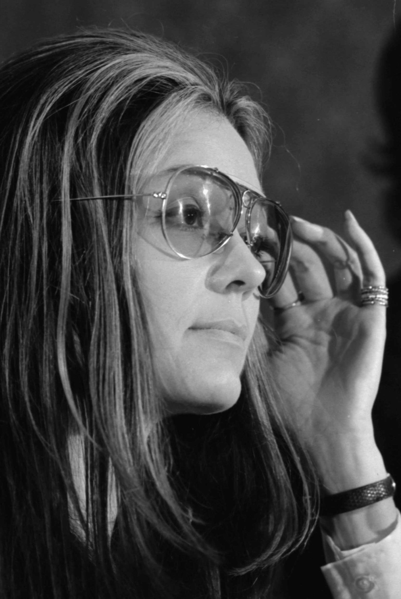
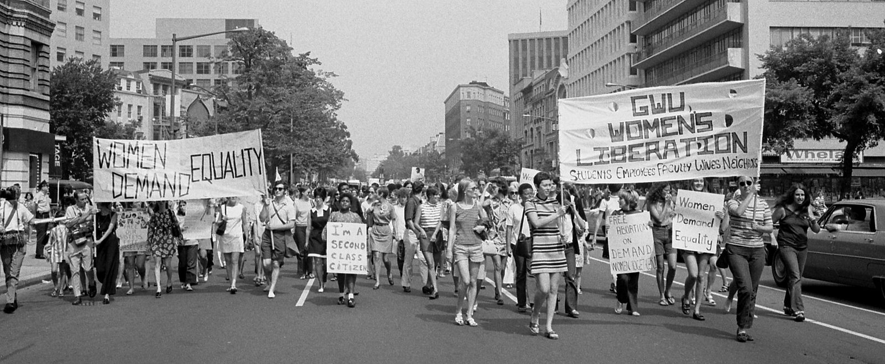

GloriaSteinem
25 March 1934, Toledo, Ohio2 September 2026, New York City
Asked what superpower she would choose, she said: To be able to show people that we are linked, not ranked.
9 This is her life in 10 chapters, told as far as possible in her own words.
Gloria Steinem died at home in New York on 2 September 2026. She was 92.12
She was a journalist who became the best-known face of American feminism, a co-founder of Ms. magazine, and an organiser who spent most of six decades travelling to speak and to listen. The statement announcing her death said she “continued working for equality until the very end”.2
She liked meetings where everyone spoke in turn. So this piece tries to let her speak, and to listen. Every quotation here was checked against the text of the source it cites. The numbers lead to the list at the foot of the page.

Chapter 1 1934–1952
The road
Her first memory was of a moving car. Her first job was looking after her mother.
Being held on my mother's lap while my father drove.
Leo Steinem ran a summer resort at Clark Lake, Michigan, where swing bands played. In winter he put the family in a trailer and drove, buying and selling antiques as he went.14
Gloria had little regular schooling before her teens.8 Her mother, Ruth, had been a reporter on the Toledo Blade. A few years before Gloria was born she had a breakdown, and she never worked again.17
Of her father she later wrote: “He loved and honoured me as a unique person. And that let me know that he and I – men and women – are not opposites at all.”7
Her parents separated when she was 10. Her sister was away at college. That left Gloria alone in Toledo with a mother too ill to cope.12
“I became a grown-up too early, from 10 to 17, a small person responsible for a big person.”17
She never blamed Ruth. “I knew my mother loved me, but she couldn't take care of me.”1 For her last year of school she moved to Washington to live with her sister, Susanne. “Because I was responsible only for myself, I was in heaven.”6
My mother paid a high price for caring so much, yet being able to do so little about it. In this way, she led me toward an activist place where she herself could never go.
Chapter 2 1956–1958
A cup, a comb, a sari
A doctor in London asked her for two promises. Then India taught her how to listen.
She graduated from Smith College in 1956 with a degree in government and won a fellowship to India.13 In London in 1957, waiting for her visa, she found she was pregnant. She was 22, and abortion was against the law.35
A doctor, John Sharpe, agreed to help. He said: “You must promise me two things. First, you will not tell anyone my name. Second, you will do what you want to do with your life.”5
She told nobody for years. “Speaking for myself, I knew it was the first time I had taken responsibility for my own life.”4
Dear Dr Sharpe, I believe you, who knew the law was unjust, would not mind if I say this so long after your death: I've done the best I could with my life. This book is for you.
Her plane landed in Bombay in 1957. In Delhi she lived at Miranda House, a women's college, and wore a sari every day.3
Travelling third class from Calcutta to Kerala, in a carriage kept for women, she was drawn into talk of marriage, childbirth and contraception. She called it “a dormitory on wheels”. “Had I been isolated in a car, this talking circle could never have happened.”3
When caste violence broke out in what was then Madras state, she joined followers of the Gandhian reformer Vinoba Bhave who walked from village to village to calm rumours. She carried “a cup, a comb and the sari I wore”.3
What she took from it became her method for life: “Ask the people what they want, don't tell them what they need.”3
If you want people to listen to you, you have to listen to them.
“A western version of walking in villages”
That is how she described her later decades on the road in America.3 Pick a place, or drag the globe.
Chapter 3 1960–1968
The ex-Bunny
She wanted to write about politics. Editors wanted textured stockings. Then she put on the ears.
She began work as a journalist in New York in 1960.4 Her first serious assignment, for Esquire in 1962, was a report on the contraceptive pill.1
She became a well-paid magazine writer, interviewing Gore Vidal, James Baldwin and Paul Newman.1 Of a fashion piece for the New York Times she said: “I researched the hell out of textured stockings!”4
In a taxi one night, she recalled, the writer Gay Talese leaned across her to tell Saul Bellow that every year a pretty girl came to New York and pretended to be a writer. “Well, Gloria is this year's pretty girl.”5
In January 1963 she auditioned at the New York Playboy Club under the name Marie Catherine Ochs, on assignment for Show magazine. “A Bunny's Tale” ran in two parts that May and June, written as a diary.10
What the advert promised, and what she found
The club advertised a glamorous job at a handsome wage. Her diary recorded the rest.
The weekly salary the Playboy Club advertised that its Bunnies earned.10
The job, she found, did not come close to paying it.Bunny: Marie Catherine Ochs
New York, 1963
- TipsThe club takes 50% of the first $30 in tips charged to food and drink bills.10
- Your costsUpkeep and cleaning of the costume, and the false eyelashes you are expected to wear.10
- The costume“Two inches smaller than any of my measurements everywhere except the bust.”11
- Before you startA gynaecological examination and a blood test for venereal disease, on the club's orders.1011
- DemeritsFor heels lower than three inches.44
- How you are called“Here bunny, bunny, bunny!”10
- Weight lost10lb, half of it in a single night.2
- Time servedAccounts differ: 11 days in one Guardian report, three weeks in another.21
- ResultHugh Hefner wrote to say he had stopped the physical examinations.43
I was just beginning to get serious assignments, and then for years and years I was the ex-Bunny.
The piece made her name and, for a time, cost her work, “because I had now become a Bunny – and it didn't matter why”.2 At 82 she was still weighing it: “Since hostile people still call me a former Playboy Bunny, even at 82, I probably shouldn't have done that in my youth, even to write an exposé.”9
In 1968 Clay Felker launched New York magazine and gave her a political column, The City Politic.1 She had the beat she wanted. The next year it changed her.
Chapter 4 1969–1971
A big click
She went to a church near Washington Square as a reporter. She left as something else.
In 1969 she covered a “speak-out” held by the radical feminist group Redstockings, at which women stood up and described their illegal abortions.12
She had never told anyone about London. Listening, she felt what she called “a big click”.1 The fault lay with the law, not the women. She later called that day the start of her life as an “active feminist”.2
Male colleagues warned her off: “Don't get involved with these crazy women. You've worked hard to be taken seriously.”4 That April her column carried a new headline: “After Black Power, Women's Liberation”.1
Once the light began to dawn I couldn't understand why I hadn't figured out any of this before.

In 1970 she testified in the Senate for the Equal Rights Amendment and gave her first commencement speech, at Vassar.41 The task, she told the graduates, was “not to learn … but to unlearn”.1
In 1971 she helped found the National Women's Political Caucus with Bella Abzug, Shirley Chisholm, Betty Friedan and Fannie Lou Hamer.14 Sex and race, she argued there, had been “the primary ways of organising human beings into superior and inferior groups”.2
From 1969 to 1973 she toured the country with the childcare organiser Dorothy Pitman Hughes, speaking as a pair, one Black woman and one white.26 She never came to like the podium: “I never got over my fear of public speaking.”18
Linked, not ranked
She thought most of what is wrong comes from arranging people in a pyramid, and most of what works comes from sitting them in a circle. Drag the slider.
The ancient and modern magic of groups in which anyone may speak in turn, everyone must listen and consensus is more important than time.
Chapter 5 1971–1978
A magazine called Ms.
They named it the preview issue because they thought it might be the only one.
What to call it
Ms. first appeared on 20 December 1971 as a 40-page insert in New York magazine.13 Other names were on the table. Try them on the masthead.
The winner. It came from a 1930s secretarial handbook, which advised it when a woman's marital status was unknown.12
“It took something like 15 years for the New York Times to use it,” she said in 2022. “I was Miss Steinem of Ms magazine.”12
The magazine nobody would buy
Critics predicted it would sell fewer than 20,000 copies.1 Each dot below is 1,000.
Day 0
copies sold. The 300,000 available went in eight days,131 and 20,000 letters came in from readers.12
A caution. One Guardian account gives 250,000, and accounts differ on whether the figure belongs to the December insert or to the preview issue sold on newsstands.12

Inside was a statement headed “We Have Had Abortions”, signed by 53 well-known American women, a year before Roe v Wade. Billie Jean King, Nora Ephron, Susan Sontag, Anaïs Nin and Steinem were among them.1213
“We called it the preview edition because we thought it might be our only issue ever,” said Letty Cottin Pogrebin, a founding editor. “We had to fight to get it on the newsstands.”14
The first regular issue followed in July 1972 with Wonder Woman on the cover.13 Circulation peaked at 550,000, though the magazine was rarely on firm financial ground.12 Steinem meant to stay two years. She stayed until it was sold in 1987.1
If men could menstruate
Her sharpest tool was the reversal: swap who holds power and see what stays the same. In Ms. in October 1978 she asked what would happen if men had periods and women did not.1 Turn the cards for her answers.
All lines from “If Men Could Menstruate”, as reprinted under her name in the Guardian in 2022.15
Chapter 6 1972–1982
Thirty-five of thirty-eight
Twenty-four words about equality needed 38 states. The count stopped three short.
The Equal Rights Amendment
Congress sent the amendment to the states in 1972 with a deadline, later extended to 1982.36 Step through the years.
1972
State dates are those listed by the US National Archives, shown here by year.3839 Whether a state can take back a ratification, and whether the three late ones count, has never been settled.
The usual story is that the conservative campaigner Phyllis Schlafly beat the amendment. Steinem never accepted that.
“I don't believe she changed one vote,” she said in 2020. “The insurance industry here opposed the equal rights amendment because if they stopped segregating their actuarial tables it would cost them millions upon millions of dollars.”21
In January 2025 President Biden said the amendment should be treated as part of the constitution. It has not been certified or published as one.36

Who said it?
She was quoted so often that lines stuck to her whether or not they were hers. She tried to give them back. Guess.
Women in Congress, across her lifetime
The caucus she helped found in 1971 existed to put women in office. Each bar is one Congress. Hover, tap or use the arrow keys.
Counts are women who served as voting members at any point in each two-year Congress, worked out from the open congress-legislators dataset.40 A count taken on a single day would be slightly lower.
Chapter 7 1984–2003
The friend I married
She had called marriage an arrangement for one and a half people. At 66 she surprised everyone, herself included.
She turned 50 in 1984 with a fundraising gala at the Waldorf Astoria. That December she was arrested at an anti-apartheid protest outside the South African embassy in Washington.12
In 1986 she was diagnosed with breast cancer.1 The years that followed were, she said, “the only time in my life I felt depressed”.4 Out of them came Revolution from Within, her 1992 book on self-esteem.1
She had no children. “After feminism, I suddenly realised: not everyone has to live the same way. Imagine that!”4

We wouldn't have got married if he hadn't needed a visa.
In 2000 she married David Bale, a South African-born businessman and activist. Her friend Wilma Mankiller, the first woman elected chief of the Cherokee Nation, offered them a Cherokee ceremony.45 The bride wore jeans.8
Some readers felt betrayed. Her answer: “What surprised me was that no one saw how much marriage has changed since the 60s, when I would have had to give up most of my civil rights.”8
Bale died of brain lymphoma in 2003, aged 62.4 “In a way, he taught me about dying.”4
Chapter 8 The case against
Arguments
She was criticised from the right all her life and from the left for much of it. Here are the main charges, and what she said.
She took the CIA's money
After India she directed the Independent Research Service, which sent young Americans to Soviet-backed youth festivals in Vienna and Helsinki. It was paid for by the CIA.21 In 1975 the Redstockings group claimed the agency had installed her as a leader of the movement.1
She said she had always known who was paying.2 In 2017 she wrote: since a couple of times they've also referred to me as a former CIA agent, because I went to two Soviet-era communist youth festivals, I probably shouldn't have done that, either.
9
The media picked her because she was pretty
Her feminism, and her magazine, were too white
Ms. published Black writers but had no Black founding staff. “We made a mistake,” its first editor, Suzanne Braun Levine, has said. Alice Walker left in 1986, writing of the “swift alienation” she felt.13
Steinem said the press had cast white middle-class women as the pioneers of a movement whose base was far more mixed, and that she herself had learned feminism disproportionately from Black women
.5 The writer Rokhaya Diallo judged her more attentive to race than most of her white contemporaries, while noting that the women of colour who stood beside her are less well remembered.35
She excused Bill Clinton
In a 1998 New York Times article she argued that, even if the allegations against him were true, the president was not guilty of sexual harassment
. In 2017 she said: We have to believe women. I wouldn't write the same thing now because there's probably more known about other women now.
She added that she was glad she wrote it in that decade.25
She was hostile to trans people
She was regarded as hostile to transgender rights because of a piece she wrote in 1977. In 2013 she set out her position: I believe that transgender people, including those who have transitioned, are living out real, authentic lives. Those lives should be celebrated, not questioned.
2
“The boys are with Bernie”
In February 2016 she said on television that young women backed Bernie Sanders over Hillary Clinton because when you're younger, you think: ‘Where are the boys? The boys are with Bernie.’
23 Young women were furious. Two days later she wrote: I misspoke on the Bill Maher show recently, and apologize for what's been misinterpreted as implying young women aren't serious in their politics.
24
She was too nice
This one was her own. Younger women see me on TV and they say, ‘Gloria, why do you smile and laugh so much? Those are serious things you're talking about.’ And they're right.
8
Chapter 9 2013–2017
Never going home
In her eighties she collected a medal, crossed a border and spoke to the Women's March on Washington.
On 20 November 2013 Barack Obama gave her the Presidential Medal of Freedom at the White House.142
On 24 May 2015, aged 81, she crossed from North to South Korea with 30 women from 15 countries, among them two Nobel peace laureates. Critics said the North had used them. “We are trying to make person by person connections, so that there is understanding,” she said.22
That autumn she published My Life on the Road, dedicated to the London doctor.5

This is the upside of the downside. This is an outpouring of energy and true democracy that I have never seen in my very long life.
Remember the constitution does not begin with ‘I the president’ it begins with ‘we the people’.
We've elected an impossible president, we're never going home.
That June she compared the country to a woman leaving a violent partner, for whom the moment of escape is the most dangerous. “We are in maximum danger, but we are about to be free.”27
Chapter 10 2017–2026
Not yet
People kept asking when she would pass on the torch.
I'm not giving up my torch, thank you very much. I am using it to light other people's torches.
She did not retire. “Would I retire from life? This is my life!”19
Younger feminists were, she said, the friends she had been waiting for: “they are there and they're younger than my blue jeans.”19
She called herself “a hopeaholic”,32 and meant it as a discipline. “I'm not pessimistic because I think pessimism defeats you before you start.” Hope, she said, “is a form of planning”.29
She outlived Roe
The Supreme Court recognised a constitutional right to abortion on 22 January 1973, when she was 38. It withdrew it on 24 June 2022, when she was 88.41 The right lasted 49 of her 92 years.
Asked that year how she felt about women's progress, she said: “I feel proud, and I feel mad as hell … We are dealing with the same issues.”12
To the end she was gathering women in talking circles at her house.28 She gave the house to a foundation so the meetings could go on without her.1
In her last memoir, An Unexpected Life, she wrote: “Now even my jeans are much older than many people I work with.”28
She died on 2 September 2026, “peacefully at her home in New York City, surrounded by some of the many who loved her”.2
To behave as if everything you do matters, because you have no idea which thing might.
As someone who left the world around me a little kinder and less hierarchical.
Asked, at 82, to name her greatest achievement
“I haven't done it yet.”9
Gloria Steinem · 1934–2026
Move across the dark, or press the button.